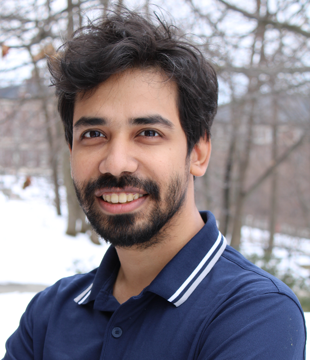

|

|
|
|
Farhad Mohsin
[ফরহাদ মহসিন, pronounced "fawr-hahd moh-sin"]
Assistant Professor
Department of Math and Computer Science
College of the Holy Cross
Worcester, MA 01610, USA
Email: farhadmohsiniii (at) gmail.com | fmohsin (at) holycross.edu
Phone (Work): (Worcester_area_code) 793-2872
CV (Updated May 2023) | Publications
|
Teaching at Holy Cross
Research Interest
I do research in preference aggregation and fair decision-making, specifically on designing fairer voting rules. I have been exploring ML-based techniques to design economic mechanisms. Other broad interests include natural language processing, interpretable machine learning and multi-agent reinforcement learning.
I was fortunate to have done my PhD with Professor Lirong Xia at RPI.
Education
Professional Experience
2024
- [conference] Computational Complexity of Verifying the Group No-show Paradox [pdf]
Farhad Mohsin, Qishen Han, Sikai Ruan, Pin-Yu Chen, Francesca Rossi and Lirong Xia
The 33rd International Joint Conference on Artificial Intelligence (IJCAI-24), supercedes the AAMAS-23 version
2023
-
[conference] Computational Complexity of Verifying the Group No-show Paradox [presentation]
Farhad Mohsin, Qishen Han, Sikai Ruan, Pin-Yu Chen, Francesca Rossi and Lirong Xia
Accepted as Extended Abstract at The 22nd International Conference on Autonomous Agents and Multiagent Systems (AAMAS-23)
-
[workshop] Generating Election Data Using Deep Generative Models
Jui Chien Lin, Farhad Mohsin, Sahith Bhamidipati and Lirong Xia
The Workshop on Artificial Intelligence for Social Good (AI4SG-23), 14 Feb 2023.
-
[workshop] Dependency and Coreference-boosted Multi-Sentence Preference Model [paper]
Farhad Mohsin, Inwon Kang, Yuxuan Chen, Jingbo Shang and Lirong Xia
The 9th International Workshop on Deep Learning on Graphs: Method and Applications (DLG-AAAI’23), 13 Feb 2023.
2022
-
[journal] Learning to Design Fair and Private Voting Rules [paper]
Farhad Mohsin, Ao Liu, Pin-Yu Chen, Francesca Rossi and Lirong Xia
Journal of AI Research, AI and Society Track (JAIR), accepted, Nov 2022.
-
[workshop] Learning Individual and Collective Priorities over Moral Dilemmas with the Life Jacket Dataset [paper]
Farhad Mohsin, Inwon Kang, Pin-Yu Chen, Francesca Rossi and Lirong Xia
13th Multidisciplinary Workshop on Advances in Preference Handling at IJCAI-2022 (MPREF-22), 23 Jul 2022.
2021
-
[workshop] Making Group Decisions from Natural Language-Based Preferences [paper] [dataset] [presentation]
Farhad Mohsin, Lei Luo, Wufei Ma, Inwon Kang, Zhibing Zhao, Ao Liu, Rohit Vaish and Lirong Xia
The 8th International Workshop on Computational Social Choice (COMSOC-21), 7-10 Jun 2021.
-
[arxiv] Truthful Information Elicitation from Hybrid Crowds. [paper]
Qishen Han, Sikai Ruan, Yuqing Kong, Ao Liu, Farhad Mohsin and Lirong Xia
arXiv:2107.10119.
2019
-
[conference] Strengthening Smart Contracts to Handle Unexpected Situations [paper]
Shuze Liu, Farhad Mohsin, Lirong Xia and Oshani Seneviratne
2019 IEEE International Conference on Decentralized Applications and Infrastructures (DAPPCON-2019), 4-9 Apr 2019.
-
[workshop] Ontology Aided Smart Contract Execution for Unexpected Situations [paper]
Farhad Mohsin, Xingjian Zhao, Zhuo Hong, Geeth de Mel and Lirong Xia, Oshani Seneviratne
Blockchain enabled Semantic Web Workshop (BlockSW) and Contextualized Knowledge Graphs (CKG) Workshop (BlockSW-2019), 27 Oct 2019.
2015
-
[conference] Adaptive Beamforming with a Microphone Array [paper] [preprint]
Shah Mahdi Hasan, Mohammad Bin Monjil, Farhad Mohsin, Md. Abul Hayat and A.B.M. Harun-ur Rashid
2015 18th International Conference on Computer and Information Technology (ICCIT-2015), 21-23 Dec 2015.
Other
In the past, I've fancied myself a writer on topics varying from mathematical problem solving to comicbook movies. Most of these are written in my native language, Bangla, and can be found in the following links.
- Medium. Medium blog where I plan to write content about my research in Bangla.
- Blog. Early blog posts. Has both Bangla and English content, the recent posts are mostly in English.
- Olympiad Book. A math olympiad problem solving textbook in Bangla that I co-wrote and edited.
Last updated: Aug 2024